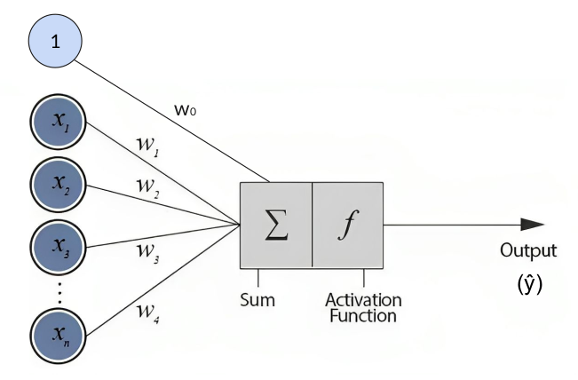
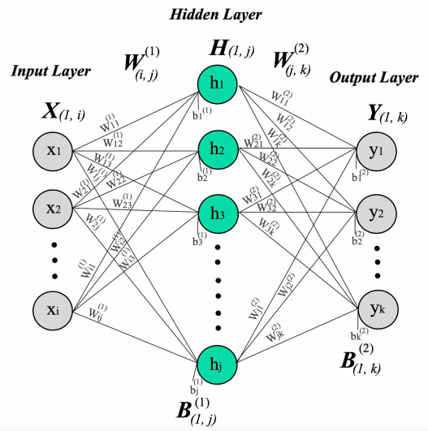
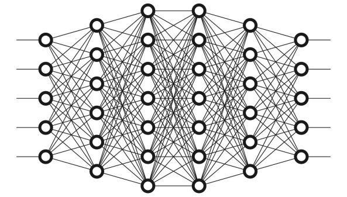
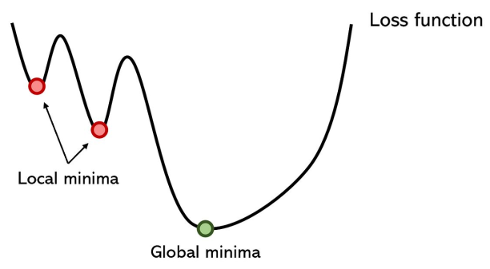

Neural Networks
Neural Networks
Neural networks, often referred to as artificial neural networks (ANNs) or simply “neural nets,” are computational models inspired by the structure and function of biological neural networks in the human brain. They are a subset of machine learning algorithms designed to recognize patterns and learn from data to perform tasks such as classification, regression, clustering, and more.
The neural networks are not easily interpretable, but have a very good performance on image and speech recognition, natural language processing, computer vision, and reinforcement learning.
Neurons: Neurons are the basic building blocks of neural networks. Each neuron receives one or more input signals, applies a transformation to those inputs, and produces an output signal. In artificial neural networks, neurons are typically represented as mathematical functions that compute a weighted sum of inputs and apply an activation function to produce the output.

The inputs are the values received from the input data (or from the ouput of neurons in previous layer). Each input is associated with a weight, wich represents the strength of the connection between the input and the neuron.
After calculating the weighted sum of inputs the neuron applies an activation function f to produce the output, which is nothing more than the prediction of the neuron.
Neural networks have forward and backward propagation of the information to calculate the values of the weights asociated to every input data:
- Forward propagation: for each input row the features (inputs) are multiplied with their corresponding weights and added. An activation function is applied to this sum. At the end is calculated the loss function (prediction error).
- Backward propagation: Each weight is updated to optimize the loss function.
- Continue applying forward and backward propagation until convergense of the weights of until the maximum number of iteration (decided by user).
Activation Functions: Activation functions introduce non-linearity into the neural network, allowing it to learn complex relationships and patterns in the data. Common activation functions include: - linear - sigmoid - tanh - ReLU (Rectified Linear Unit) - softmax
The choice of activation function determines the characteristics of the neuron’s output. Different activation functions introduce different properties such as non-linearity, sparsity, or output range.
The choice of activation function depends on the specific task, network architecture, and desired properties of the network output. Each activation function has its advantages and disadvantages, and the selection is often based on empirical evaluation and experimentation.
Layers: Neurons are organized into layers within a neural network. The three main types of layers are:
- Input Layer: The input layer receives input data and passes it to the subsequent layers. It has the same length as number of features.
- Hidden Layers: Hidden layers are intermediate layers between the input and output layers. They perform transformations on the input data to learn patterns and features. The hidden layers can have any lenght.
- Output Layer: The output layer produces the final output of the neural network, such as class probabilities in classification tasks or numerical values in regression tasks. The lenght of this layer depends on the type of problem being studied. For example one neuron is needed for regression problems, or N neurons are needed for classifications problems with N classes.

Deep NN (DNN): A deep neural network (DNN) is a type of artificial neural network with multiple hidden layers between the input and output layers. It is characterized by its depth, referring to the number of hidden layers in the network. Deep neural networks are capable of learning complex patterns and representations from data, making them suitable for a wide range of tasks, including image recognition, natural language processing or speech recognition.

Loss function: The loss function measures the discrepancy between the predicted output of a neural network and the actual target values in the training data. It quantifies how well the neural network is performing on a specific task and provides a measure of the error or loss incurred by the model’s predictions.
The choice of loss function depends on the type of task the neural network is performing.
For Regression problems:
Mean Squared Error (MSE): \[ MSE = \frac{1}{n} \sum_{i=1}^{n} (y_i - \hat{y}_i)^2 \]
Mean Absolute Error (MAE): \[ MAE = \frac{1}{n} \sum_{i=1}^{n} |y_i - \hat{y}_i| \]
Huber loss (robust to outliers): \[ Huber Loss = \frac{1}{n} \sum_{i=1}^{n} \left\{ \begin{array}{ll} \frac{1}{2} (y_i - \hat{y}_i)^2 & \text{for } |y_i - \hat{y}_i| \leq \delta \\ \delta |y_i - \hat{y}_i| - \frac{1}{2} \delta^2 & \text{for } |y_i - \hat{y}_i| > \delta \end{array} \right. \]
For Classification problems:
Binary Cross-Entropy: \[ Binary Cross-Entropy = -\frac{1}{n} \sum_{i=1}^{n} \left( y_i \log(\hat{y}_i) + (1 - y_i) \log(1 - \hat{y}_i) \right) \]
Sparse Categorical Cross-Entropy: \[ Sparse Categorical Cross-Entropy = -\frac{1}{N} \sum_{i=1}^{N} \log(p_{i, y_i}) \]
Categorical Cross-Entropy: \[ Categorical Cross-Entropy = -\frac{1}{n} \sum_{i=1}^{n} \sum_{j=1}^{m} y_{ij} \log(\hat{y}_{ij}) \]
The idea is to optimize the loss function, but them do not always converge. There is a considerable risk to get stuck in a local minima and never get the global minima.

To avoid this we use Optimizers: - Adam - RMSprop - AdaGrad
(Adam is an effective optimizer in the 95% of cases)
Epochs: an epoch refers to one complete pass through the entire training dataset during the training process. During each epoch, the model sees the entire dataset, computes the loss, and updates the model parameters (weights and biases) based on the gradients of the loss function.
Neural Networks require multiple epochs for a good optimization of the weights, but this number of epochs has to be decided carefully: - Too many epochs can lead to overfitting. - Too few epochs may result in underfitting.
Recomendations
Here are some recomendations for the definition and training of the model.
- Number of layers:
- One or two hidden for starting
- Maybe deeper for more complex data os task
- Neurons per layer:
- It is common to start with a lenght between the input and the ouput
- Or even with more neurons than the input on the first layer
- Reducing the hidden sizes as the network goes deeper
- Adam is normally a good start